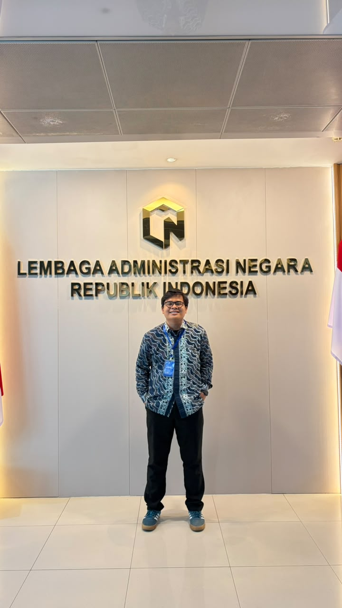
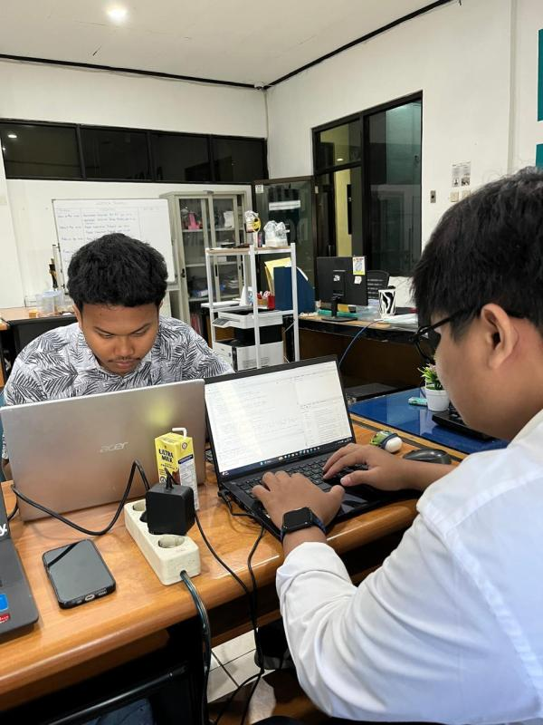
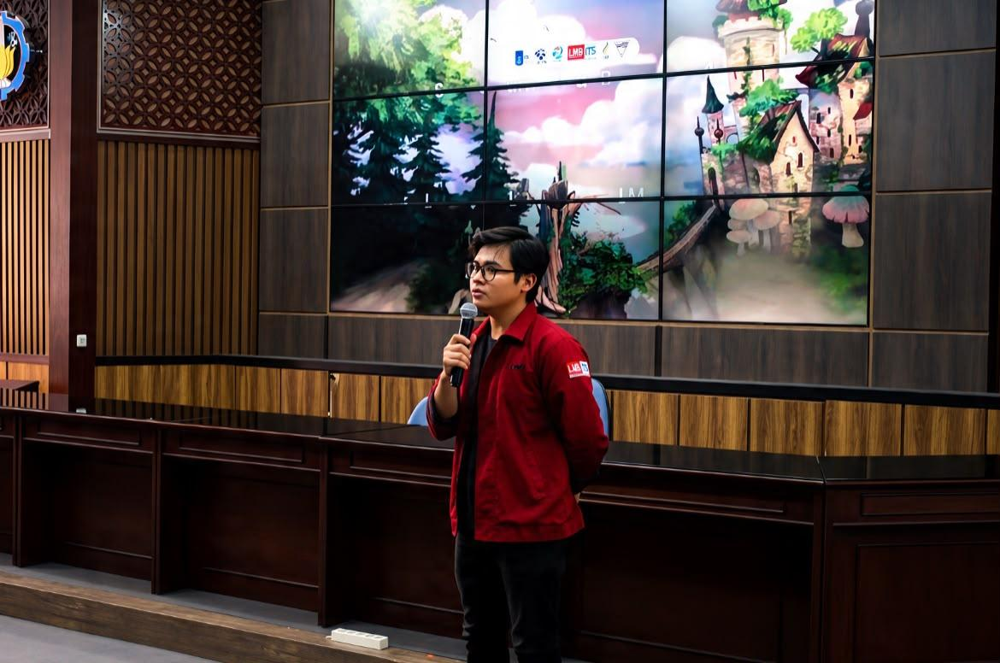
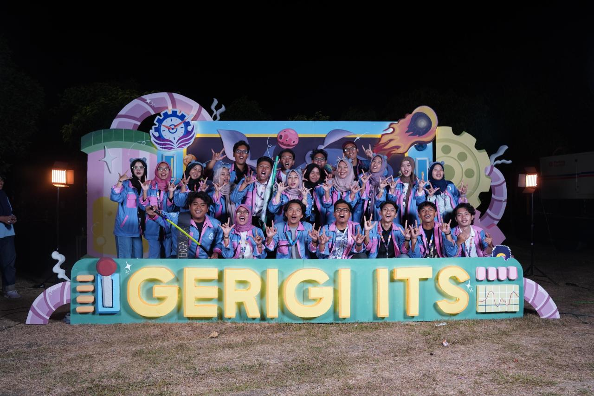
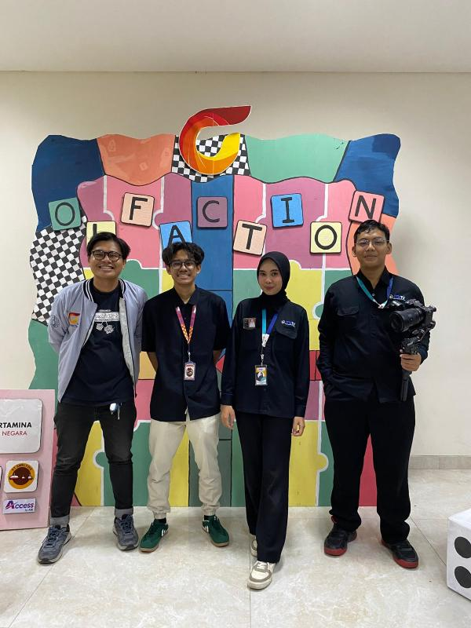

PORTFOLIO
ABOUT ME
Applied Bachelor’s (D4) graduate in Business Statistics from Institut Teknologi Sepuluh Nopember (ITS) with a GPA of 3.26/4.00 and a Business Intelligence Analyst certification. Possesses practical experience in building Power BI dashboards, shaping data using Power Query & DAX, and conducting statistical analysis with SQL, Python, R, SPSS, and Minitab. Skilled in transforming raw data into actionable business insights through data visualization tools like Tableau and Looker Studio to support operational decision making.
SOFTWARE & TECHNICAL SKILLS
LANGUAGES & SOFT SKILLS
EDUCATION
Applied Bachelor of Business Statistics
Aug 2022 – Aug 2026Experience & Involvement
Data Analyst & Information Management Intern
Lembaga Administrasi Negara – Jakarta
- Managing and processing informational data to support government administrative efficiency and institutional performance.

Data Analyst Intern
PT PLN (Persero) UP3 Surabaya Selatan – Surabaya
- Developed interactive Power BI dashboards using Power Query and DAX to monitor operational performance and analyze energy loss systematically.
- Automated operational reporting using Jotform Apps, demonstrating structured and analytical problem-solving skills applied to performance management.

Operational Support Freelancer
GAFIN LAB CLEAN & CARE – Surabaya
- Managed and processed administrative and daily operational data to support service quality evaluation and customer satisfaction.
- Handled customer service communication touchpoints and operational administration.

Surveyor Project
PDAM Kota Surabaya – Surabaya
- Collected, verified, and managed household customer data for utility service analysis requirements, ensuring field data accuracy.

Head of External Relations Bureau
LMB ITS 2024 – Institut Teknologi Sepuluh Nopember
- Led external partnership initiatives and served as Project Manager for cross-campus benchmarking conferences, Lokakarya 2024 & Symposium 2025.

Mentor
GERIGI ITS 2024 – Institut Teknologi Sepuluh Nopember
- Guided and directed 20 new ITS students in adapting to campus life, covering academic procedures and student organization management.

Creative Expert Staff
OLFACTION 2024 – Institut Teknologi Sepuluh Nopember
- Compiled visual storyboards, directed camera positioning, and arranged lighting angles for official teaser and aftermovie video productions.

My Portfolio
Klik pada kartu proyek untuk melihat gambaran website, screenshot hasil, fitur, dan software lengkap

Dashboard Forecast Susut Energi
Sistem peramalan otomatis tingkat error 1-2% di 5 wilayah Surabaya Selatan.

Monitoring Anomali Pelanggan Listrik
Visualisasi real-time OneDrive ke Power BI untuk klasifikasi status pelanggan.

Aplikasi Berita Acara Digital PLN
Platform digital untuk input, approval berjenjang, dan pelaporan berita acara lapangan.

Multi-Store Retail Sales Dashboard
Analisis omzet, margin kotor, diskon promosi, dan akurasi persediaan di 24 gerai.

Hotel Management in Netherlands
Visualisasi interaktif lokasi hotel, tipe kamar, rentang harga, dan ulasan.
Certification
Validasi keahlian profesional resmi
Sertifikasi Kompetensi Business Intelligence Analyst
Badan Nasional Sertifikasi Profesi (BNSP) / LSP ITS — 2026
Let's Connect
Tertarik berkolaborasi atau berdiskusi seputar Data Analytics & Business Intelligence?